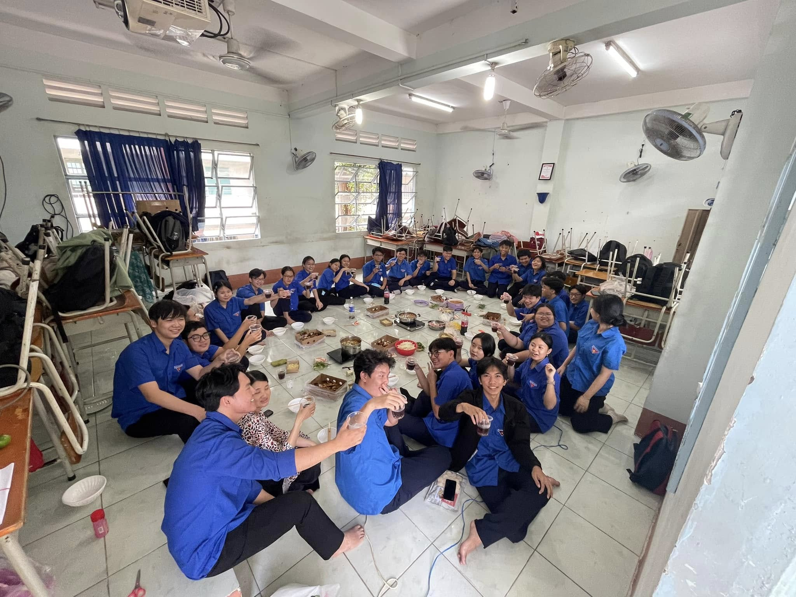
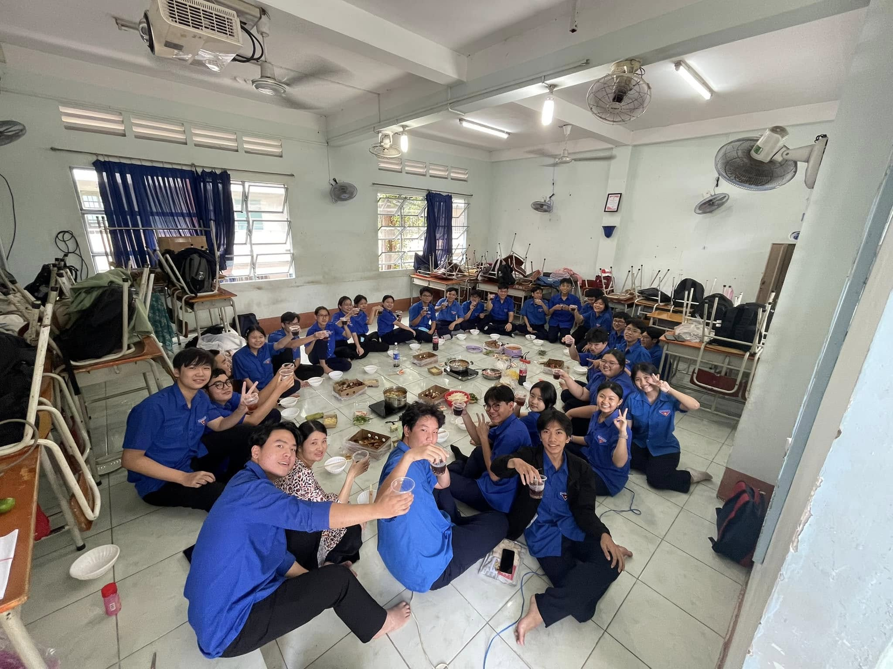
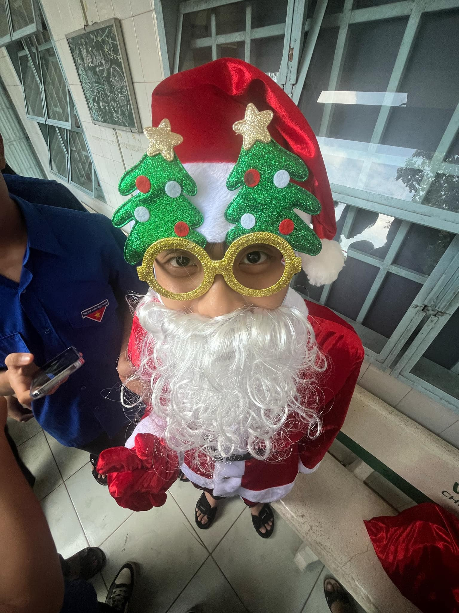

Kết lại học kì I 2024-2025
Vậy là học kì I của năm học 2024-2025 đã trôi qua, tập thể lớp H k28 chúng mình đã cùng nhau đi qua được một nửa hành trình, vui có mà buồn thì cũng không thiếu. Nhằm nhìn lại một chặng đường đã qua và nhìn đến hành trình phía trước, chúng mình đã cùng nhau tổ chức một buổi liên hoan.
Buổi liên hoan của lớp diễn ra trong bầu không khí rộn ràng, tràn ngập tiếng cười và những cảm xúc rất khó gọi tên. Ngay từ lúc bắt đầu, cả không gian đã trở nên ấm áp hơn bởi sự háo hức và tinh thần gắn kết của mọi người. Những món ăn được các bạn chuẩn bị, những tấm bảng được trang trí ngẫu hứng và những bản nhạc vui vang lên đã khiến khoảng thời gian ấy trở nên thật đặc biệt. Trong buổi liên hoan, những câu chuyện vui được kể lại, những kỷ niệm cũ được nhắc đến bằng nụ cười rạng rỡ, khiến ai cũng cảm thấy gần nhau hơn. Không khí không hề nặng nề, mà ngược lại, tràn đầy sự tươi trẻ và năng lượng tích cực của tuổi học trò. Những bức ảnh chụp chung, những khoảnh khắc tưởng chừng rất bình thường lại trở thành điều đáng nhớ nhất. Khi buổi liên hoan khép lại, niềm vui vẫn còn đọng lại trong từng ánh mắt, để rồi khi nhớ về, đó sẽ luôn là một ký ức đẹp gắn liền với tình bạn và những ngày tháng đã cùng nhau trải qua.

Tập thể lớp

Tập thể lớp nâng ly

Secret từ các bạn đội tuyển Quốc gia